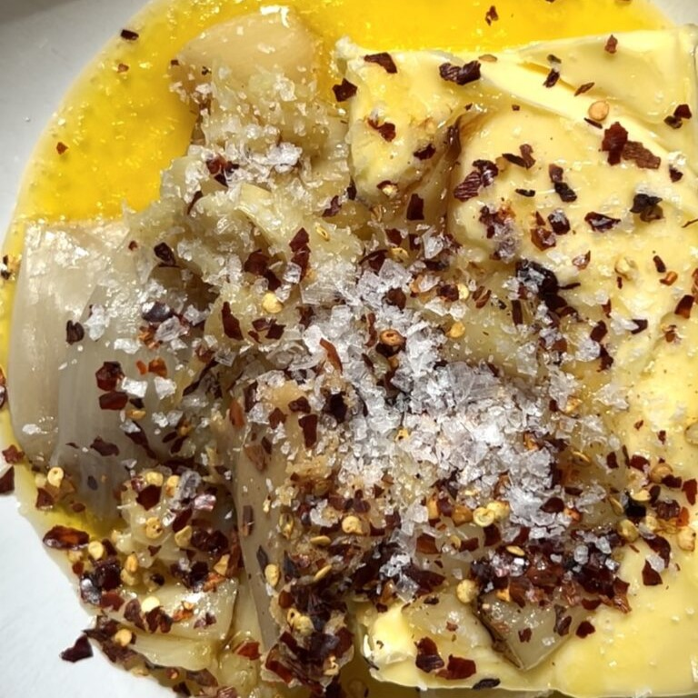
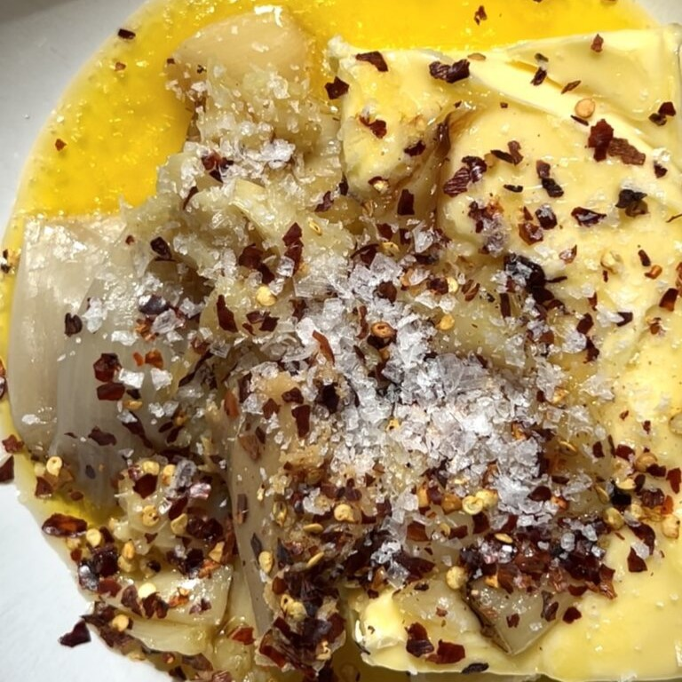

Schalotten- und Knoblauchbrot
 

Zutaten:
(1 Portionen)
| 1 | Italienisches Brot (ich habe Pane de Casa verwendet) |
| Schalotten | |
| Knoblauchknollen | |
| 125 g | weiche Butter |
| 1 El | Miso |
| 1/2 El | Chiliflocken |
| Käse (ich habe eine Mischung aus Mozzarella und Parmesan verwendet) | |
| Gehackte Petersilie | |
| 1-2 El | Honig |
Schritte der Anleitung:
- Schneide die Oberseiten der Knoblauchknollen und Schalotten ab. Lege sie auf ein Stück Alufolie, träufle reichlich Olivenöl darüber und würze mit Salz und Pfeffer. Falte die Alufolie zusammen und backe sie bei 180°C für 1 Stunde 15 Minuten oder bis Knoblauch und Schalotten goldbraun und karamellisiert sind. Lasse abkühlen.
- Drücke den Knoblauch und die Schalotten aus und gib sie in eine Schüssel. Füge Butter, Miso, Chiliflocken, Salz und Pfeffer hinzu und mische gut, bis alles kombiniert ist.
- Schneide das italienische Brot längs in zwei Hälften und verteile die Mischung großzügig darauf (du kannst auch Einschnitte in dein Brot machen, damit die Butter besser durchzieht). Mit Käse bestreuen und bei 180°C grillen/überbacken, bis es goldbraun ist (achte darauf, es im Auge zu behalten und verbrenne es nicht!).
- Einmal goldbraun und knusprig, mit Petersilie und Honig garnieren. In Scheiben schneiden und servieren.